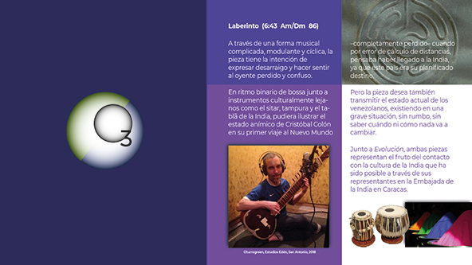

INFO: FUNCIÓN | INTEGRANTES | TARIFAS | DISTRIBUCIÓN | RIDER |
{kind=link}
HOME

LABERINTO
(Emilio Mendoza)
Am/Dm 86 div. binaria
A través de una forma musical complicada, modulante y cíclica, la pieza tiene la intención de expresar desarraigo y hacer sentir al oyente perdido y confuso.
En ritmo binario de
bossa junto a instrumentos culturalmente lejanos como el
sitar, tampura y el tablã de la India, pudiera ilustrar el
estado anímico de Cristóbal Colón en su primer viaje al Nuevo
Mundo –completamente perdido– cuando por error de cálculo de
distancias, pensaba haber llegado a la India, ya que este país
era su planificado destino.
Pero la pieza desea también transmitir el estado actual de los venezolanos, existiendo en una grave situación, sin rumbo, sin saber cuándo ni cómo nada va a cambiar. Junto a Evolución, ambas piezas representan el fruto del contacto con la cultura de la India que ha sido posible a través de sus representantes en la Embajada de la India en Caracas.
• CD Guarapiche Blues (2020), Cuarteto (guit 6, 12, bajo, sitar, tabl, tamp, perc)
• En distrokid.com (Audio)
• En YouTube (Audio)
• CD Laberinto Dúo (2017), Dúo (guit 6, guit 12)
• En distrokid.com (Audio)
• En YouTube (Audio)
Una extraña composición de todo punto de vista... Una bossanova con instrumentos de la India, y con sonido a guitarra clásica... ¿Qué es esto?
Al salir de una casa de una amiga en Londres, como adolescente en 1967, pillo en la esquina en un estante al lado de la puerta un disco LP amarillo de "Andrés Segovia Plays Bach" y se lo pido prestado. No conocía a Bach para la guitarra hasta ese momento, sólo su producción de las Suites para orquesta y los famosos Brandenburgueses que mis padres ponían siempre al comer en familia. Este disco tenía entre otras delicias de Bach transcritas a la guitarra por Segovia, la famosa Chaconne en Dm de la partita para violín solo de J.S. Bach, la gran pieza que asentó la guitarra como instrumento del mundo clásico en los años '30 en la cruzada por Segovia. La escuché sin parar por meses y en la tentativa de sacarla en la guitarra sin partitura y sin técnica ninguna, me salieron una serie de acordes y progresiones que se convirtieron en una pieza que me daba vueltas y vueltas muy similar a la experiencia de la Chaconne de Bach.
Esta pieza, sin nombre ni estructura fija, la cargué en mis hombros por décadas y años hasta que con Ozono en prácticas seguidas, fue tomando forma definitiva junto a Juan en la guitarra doce y Dha en el tablã, convirtiéndose en una de las piezas favoritas del percusionista. Como uno de los atractivos favoritos en los conciertos con Ozono en pequeño formato era para mí jugar con la forma de las piezas, dado caso que tanto Juan como el Dha me podían seguir a cualquier parte que yo saltara sin preaviso, aunque a veces una sonrisa o breve mirada bastara para que ellos supieran que yo estaba jugando a la improvisación formal.
Esta pieza tardó muchos conciertos con Ozono para llegar a tener una estructura formal definitiva, fue para mí un laberinto compositivo porque nunca estaba decidida su forma final... Construida con progresiones armónicas pegostozas (de cuartas por ejemplo), doy vueltas y aterrizo y doy vueltas, llegando a ciertos plateaux como para descansar y luego modulo, creando incertidumbre, lo que originó su nombre. Jugamos con el concepto de Colón en su viaje perdido creyendo haber llegado a la India y el sitar en manos de Churrogreen le quedó perfecto dentro de esta construcción imaginaria de estar perdido, pero realmente la sensación se me hizo consciente al tocarla en su forma definitiva luego de haberla grabado cuando le explicaba al público que la pieza tenía la sensación que todos sentíamos en Venezuela de no saber nada adónde vamos ni a dónde ni cuándo vamos a llegar.
Video
Brújula Ecológica, Universidad Monteávila, Caracas, 13-11-2010.